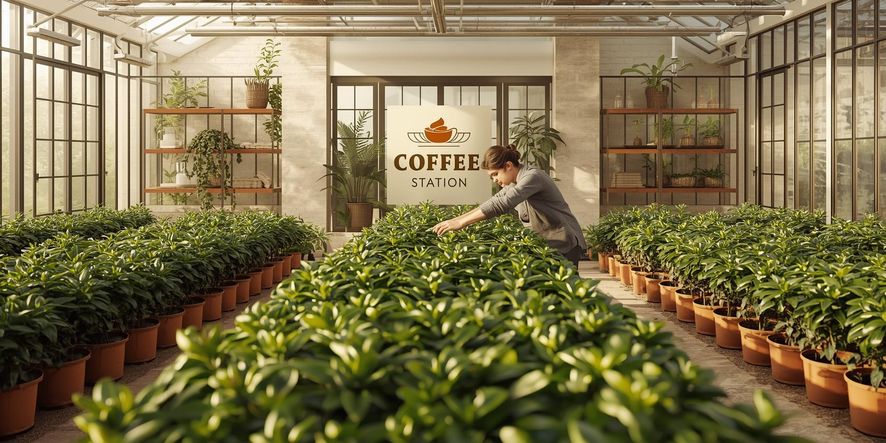

Sustentabilidade na Coffee Station
Comprometidos com o meio ambiente e práticas conscientes para um futuro mais verde.

Como Funciona
Na Coffee Station, cada ação é pensada para reduzir impactos ambientais, apoiar produtores locais e promover consciência ecológica.
Ingredientes Orgânicos
Cafés, chás e produtos frescos cultivados sem agrotóxicos.
Reciclagem e Reuso
Embalagens reutilizáveis e descarte responsável do lixo.
Energia Renovável
Utilizamos energia solar e outras fontes limpas para todas as operações.
Nossas Ações Sustentáveis
- Compostagem de resíduos orgânicos
- Uso de copos biodegradáveis
- Parceria com produtores locais
- Redução de consumo de água e energia
Nosso Impacto
Graças às nossas práticas sustentáveis, conseguimos reduzir 50% do desperdício, apoiar a economia local e promover consciência ambiental na comunidade.